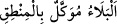

Hikmet ehlinden birisi şöyle der: “Şâyet Yûsuf: ‘Rabbim, âfiyet ve esenlik bana göre
daha iyidir.’ demiş olsaydı, Allah Teâlâ kendisine esenlikler bahşederdi. Ne var ki o
dinini kurtarınca, Allah için başına gelen musibetlere aldırış etmedi. Halbuki “__WORD__” “belâ, ağızdan çıkan söze bağlıdır.”
Muaz b. Cebel (r.a.)’den rivâyet edildiğine göre Hz. Peygamber (s.a.) bir adamın
“Allah’ım bana sabretme gücü ver.” şeklinde duâ ettiğini işitince şöyle buyurmuştur:
“Allah’tan sana belâ vermesini istemiş oluyorsun, sana esenlikler vermesini niyaz
et.”[37]
Şeyh Sa‘dî Gülistan’da der ki: “Deniz kenarında bir âbid gördüm. Kendisini aslan
yaralamış olduğu halde yarasını hiç tedavi etmemişti. Nice müddettir o elem ve
meşakkat içindeydi. Dâimâ Cenâb-ı Hakk’a şükrediyordu. O âbide ne için şükrettiğini
sordular. “Mâsıyete değil de böyle bir musibete dûçar olduğuma şükrediyorum. Evet,
Allah erleri musîbeti mâsıyete tercih ederler. Böyle bir durumda Yûsuf-i Sıddîk ne
söyledi görmez misin?! “Yûsuf: “Ey Rabbim! Bana zindan, bunların benden
istediklerinden daha iyidir…” dedi.
Eğer eziyet vererek öldürürse o değerli yar
O ölüm sırasında canımın gamlı olduğunu söyleme
“Bu miskin kuldan ne günah sâdır oldu ki” derim
“O cânânın gönlü benden incinmiş” işte gamım o olur benim
“Eğer onların hîlelerini benden çevirmezsen” eğer benden onların hîle ve
aldatmacalarını geri döndürmezsen, beni ismetinle muhâfaza etmezsen, şehevî kuvvenin
hükmüne ve tabiatımın gereğine uyarak “onlara meyleder...” yani kendi kasıd ve
ihtiyarımla onlara meylederim.
Bu sözü ile Yûsuf (a.s.), peygamberlerin ve sâlihlerin sünnetlerine uyarak Allah’ın
lütuflarına sığınmış olmaktadır. Onların sünneti ise hayırlara ermeyi ve şerlerden
kurtuluşu sadece Allah’tan bilmek ve kendisinde hiçbir güç ve kuvvet görmemektir.
Yine Yûsuf (a.s.)’ın kendisini savunacak tâkati olmadığını ortaya koyarak o kadınların
hîlelerini kendisinden uzaklaştırması konusunda Allah’ın lütfunu mübâlağa ile taleb
vardır. Bu tıpkı imdad dileyen bir kimsenin ‘Yetişin, yoksa boğulacağım.’ demesi
gibidir. Çünkü o, nefsinde bu kadınların hevâsına çağıran bir çağırıcı olmasına rağmen
Allah’tan kendisini ismet ve iffete mecbur etmesini, zorlamasını niyaz etmektedir.
“ve” bildikleriyle amel etmeyen “cahillerden olurum.” Çünkü bildiği ile amel
etmeyen birisiyle câhil eşittir. Ya da beni çağırdıkları o fiili irtikâb etmek suretiyle
akılsızlardan olurum! Çünkü hikmet ehli kişiler böylesi çirkinliklerde bulunmazlar.
Bu âyette, günah ve mâsıyetlerin sırf câhillik ve beyinsizlikten ileri geldiğine, zinâ
edenlerin de cehâletleri sebebiyle yalancılar zümresine dâhil olduklarına apaçık bir